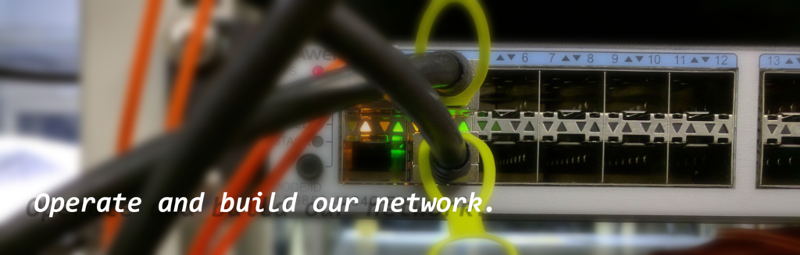

About rgroot
rgroot is one of the research/study groups in the Tokuda/Murai Joint Research Project at Keio University Shonan Fujisawa Campus. Our research activities consist of both research on information and communication technology and actual network operation, including laboratory network operation, paper lectures on network technology, and promotion of individual research. Our group is responsible for managing the network used by the joint research project as a whole.
Research topics
Our main research topics include the following, but students are not limited to only these. Members are free to choose and tackle a topic of their choice.
- High-speed internet technology (label switching, content delivery network technology)
- Next-generation internet infrastructure technology (routing, IPv6, mobile internet, multicast, DNS)
- Wireless networking for IoT devices (LPWA, LoRaWAN)
Members
Faculty
- Keisuke Uehara (kei, Faculty of Environment and Information Studies, Associate Professor)
Students
- Yasunobu Toyota (yas-nyan, Graduate School of Media and Governance, M2)
- Korry Luke (koluke, Graduate School of Media and Governance, M2)
- Yilai Guo (guo, Faculty of Environment and Information Studies, B4)
- Yuji Kurihara (syaro, Faculty of Environment and Information Studies, B4)
- Yuki Ideta (neko, Faculty of Environment and Information Studies, B4)
- Takanori Hirano (takanori, Faculty of Environment and Information Studies, B3)
- Naoyuki Tachibana (nyatsume, Faculty of Environment and Information Studies, B3)
- Wataru Ohgai (alt, Faculty of Policy Management, B2)
- Itaru Hasegawa (airou, Faculty of Environment and Information Studies, B2)
- Shin Oura (negineri, Faculty of Policy Management, B2)
- Yuma Ueda (cyan_mm, Faculty of Policy Management, B2)
- Akira Nagaoki (okin, Faculty of Environment and Information Studies, B2)
- Koki Watanabe (nkpoid, Faculty of Policy Management, B1)
- Takumi Karasawa (tappun, Faculty of Environment and Information Studies, B1)
Contact us
Those with interest in rgroot's activities should contact us by emailing rgroot＠ sfc.wide.ad.jp.
Related links